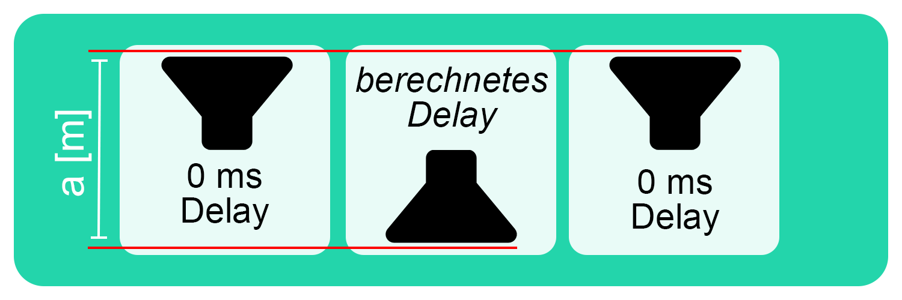

Home
Online Tools
Laufzeit / Delay [ms]
Schallweg [m]
Sub-Arrays: Cardioid
Sub-Arrays: Endfire
Über LiveAudioTools
Cardiod Subwoofer Array (CSA)
0 ms
Meter
°C
Delay [ms] berechen

Informationen über CSA